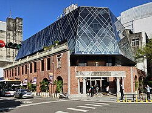

一、景點簡介
宮原眼科位於台中火車站前、綠川水岸旁，最早建造於 1927 年， 原為日本眼科醫學博士宮原武熊所開設的診所，也是日治時期台中規模最大的私人醫院。 戰後建築曾轉作為台中衛生院使用，歷經九二一大地震與歲月摧殘後一度成為荒廢危樓。
民國 99 年（2010 年），在地知名糕餅品牌「日出」團隊接手這座殘破的老建築， 結合專業建築師與結構專家進行修復與再造，歷時一年多將老屋活化。 修復團隊完整保留了沿街立面的紅磚騎樓與斑駁木構， 並於內部打造出彷彿哈利波特霍格華茲魔法學院般的挑高魔幻圖書館空間。
如今的宮原眼科已轉型為集結糕餅手信、招牌冰淇淋與文化沙龍的超人氣景點， 成為台灣歷史建築活化與地方創生的代表性成功範例。 本篇整理宮原眼科的歷史轉折、特色重點與參觀建議，帶領讀者深入探索。
景點地址：台中市中區中山路 20 號。
閱讀重點：歷史老屋再生、巴洛克紅磚騎樓、挑高圖書館空間與文創冰品。
二、建築特色與參觀順序
值得留意的三個特色
- 紅磚拱廊立面：保留日治時期的紅磚牆、古老木樑與牌樓，見證舊城區醫療歷史。
- 挑高魔幻書架：內部採用透光玻璃天花板與挑高達數層樓的大型木製書櫃，營造宏偉復古氛圍。
- 特色手作甜點：將傳統鳳梨酥、乳酪蛋糕融入多達數十種口味的冰淇淋，包裝亦具書籍設計美學。
建議參觀順序
以下是本報導規劃的參觀順序建議，並非官方指定路線。
- 抵達中山路與綠川東街交口，先於戶外欣賞紅磚拱廊、斑駁古蹟立面與「台中市衛生院」歷史雕字。
- 步入室內大廳，抬頭觀察自然採光的天窗與直達天花板的復古書架裝潢。
- 前往冰淇淋專區或伴手禮區，品嚐獨特口味的冰品並欣賞精緻書籍造型的糕餅禮盒。
- 漫步至建築外的綠川水岸步道，在河畔綠意中品嚐甜點並回望老建築全貌。
三、參觀重點比較表
| 空間區域 | 主要特色 | 建議觀察重點 |
|---|---|---|
| 紅磚騎樓外觀 | 建於 1927 年的日治磚木建築遺跡 | 外牆斑駁的歷史磚紋、騎樓圓拱與洗石子結構 |
| 中央挑高大廳 | 老屋再生融合現代設計的書閣殿堂 | 頂部透光玻璃天頂、垂直大型展示書櫃與復古燈飾 |
| 綠川水岸周邊 | 緊鄰宮原眼科的新盛綠川水岸廊道 | 親水綠帶景觀及日夜燈光倒映老建築的景致 |
四、歷史建築外觀照片

圖片來源：維基百科：宮原眼科。
五、影音報導
透過下方影片走訪宮原眼科，感受老建築活化再利用的氛圍與熱門甜點魅力：
若播放器無法播放，請 在 YouTube 觀看宮原眼科介紹影片（另開分頁）。
影片為外部創作者實地走訪介紹，各項販售內容與現場動線請以官方最新公告為準。
六、位置地圖：找到宮原眼科
宮原眼科位於台中市中區，地址為中山路 20 號。下方地圖標示本文介紹的景點位置，方便讀者對照景點與周邊街道。
位置查詢由 Google 地圖提供；抵達後請依現場導覽牌確認入口與排隊動線。
七、資料來源
本報導依下列官方與公開資料整理，參觀順序與重點觀察由作者規劃整理。
資料整理日期：。